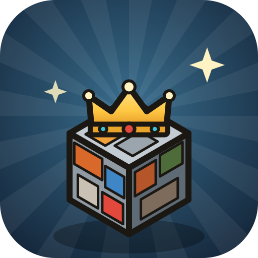
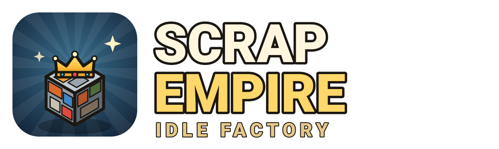
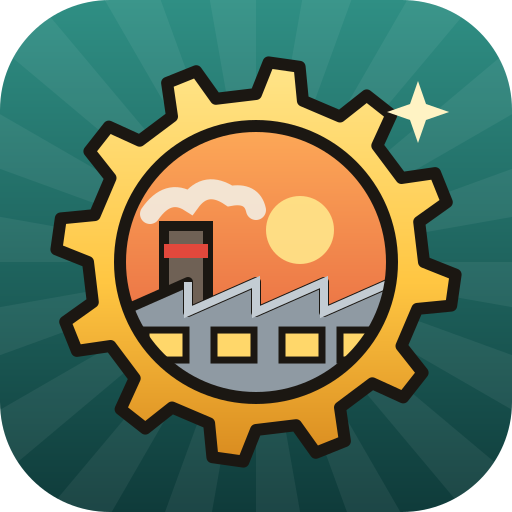
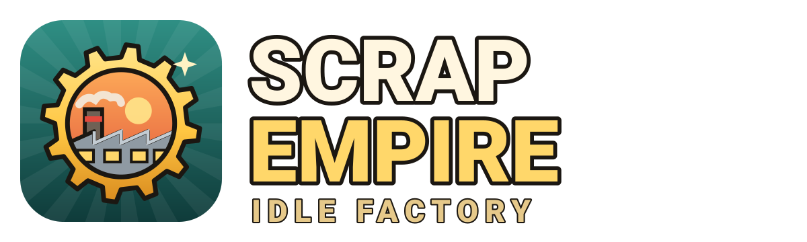
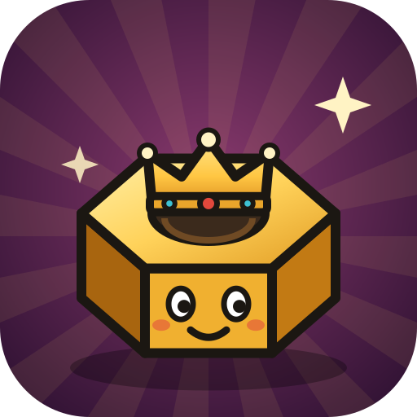
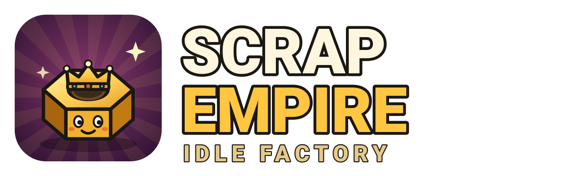

Logo nuevo
Tres versiones del logo de Scrap Empire: Idle Factory, dibujadas por código (sin recursos de terceros). Elegida el 2026-10-25: C — Tuerca coronada, que ya es el icono del juego, de Android, de la tienda y del material de prensa. / Chosen: C — Crowned nut.
A — Bloque coronado (Crowned scrap block)
Un bloque de chatarra aplastada como los del juego, con corona: «imperio de chatarra» de un vistazo. Fondo azul acero que destaca entre iconos rojos y verdes.




B — Engranaje fábrica (Factory gear)
Engranaje dorado con la nave y la chimenea al atardecer: dice «fábrica idle» como los grandes del género. Fondo verde azulado.




C — Tuerca coronada (Crowned nut) ✅ Elegida / Chosen
Tuerca, el ayudante del tutorial, como mascota con corona: tiene cara, se recuerda mejor y sirve para redes. Fondo morado que contrasta con el dorado.

